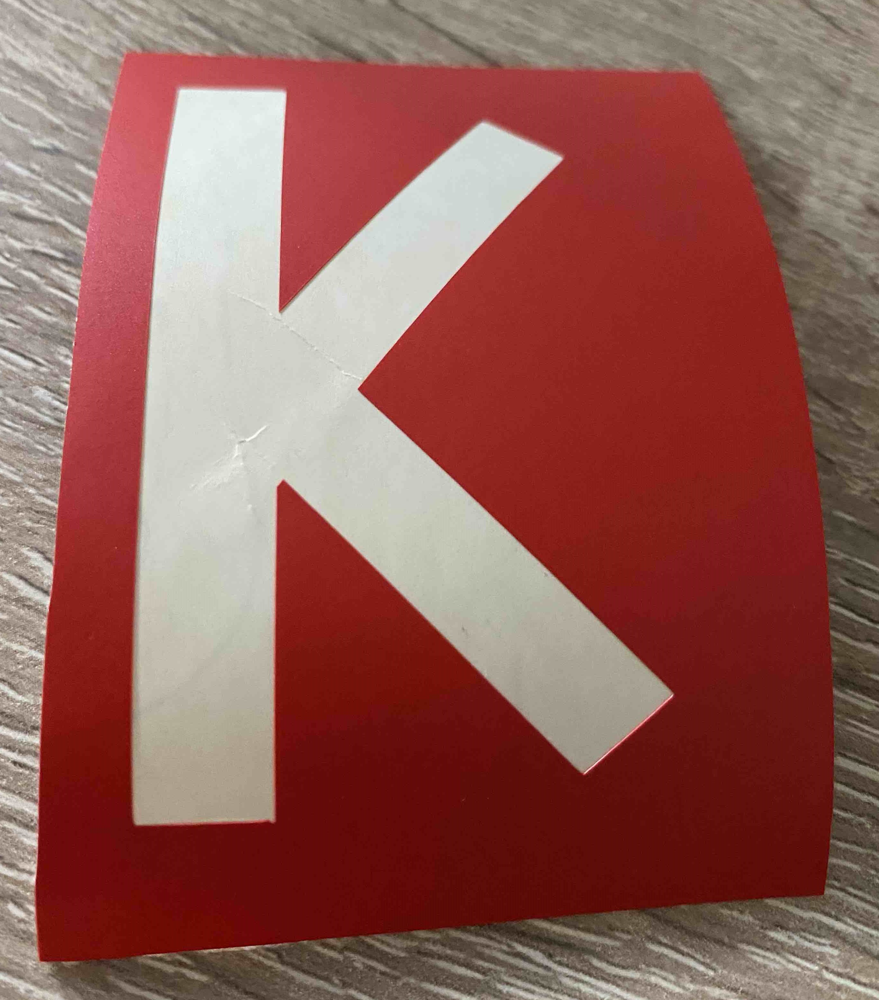
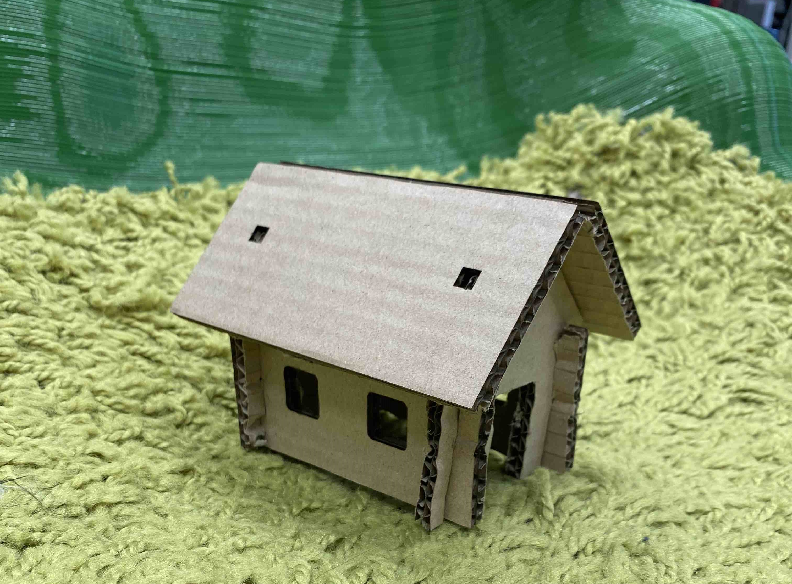

Úkol č.2
Řezání na lazeru
V tomto projektu bylo naším úkolem vytvořit model z lepenky, který si vytvoříme na laserové řezačce BRM-B90130X.
Vymyslel jsem si, že vytvořím domeček. Nejprve jsem tedy vytvořil samostatné stěny a střechu v programu SOLIDWORKS. Rozhodl jsem se modely vytvářet ve 3D programu, abych si dokázal lépe představit, jak do sebe následně budou výřezy dosedat. Vytvořil jsem si i sestavu finálního složení, abych si byl jistý, že vše perfektně sedí. Poté, co jsem byl spokojený s modely, jsem vytvořil novou sestavu, ve které jsem všechny součásti položil na rovinu a následně sestavu uložil ve formátu DXF.

Dalším krokem bylo tedy vyříznout části na laseru. Nastavení a následné řezání na stroji jsem prováděl dle návodu a ze vzpomínek na zaškolení. Laser byl nastaven na maximální výkon 55 %, minimální výkon 50 % a rychlost posuvu 55 mm/s. U stroje jsem pracoval s mými kolegy, takže jsme mohli dát případně hlavy dohromady. Po krátké době bylo dílo dokonáno. Mašina pod mýma rukama ani nevzplál, což beru jako nezpochybnitelný úspěch.

Nakonec bylo tedy na čase vyjmout lepenku a těšit se z úspěchu. Zde jsem však pochybil. Zkrze mé natěšení jsem zbrkle vyňal lepenkovou desku a nezkontroloval, jestli řezy prošly skrz. Po prohlédnutí desky jsem zjistil, že u některých řezů laser nepropálil poslední vrstvu lepenky. Vzal jsem tedy poslední řezání do vlastních rukou a skalpelem nepropálená místa vyřezal. Následovalo už jenom složení sestavy. Modely byly správně navrženy, takže se sestavením nebyly žádné problémy. Domeček jsem následně posadil na židli evokující klidný palouček a nafotil.
